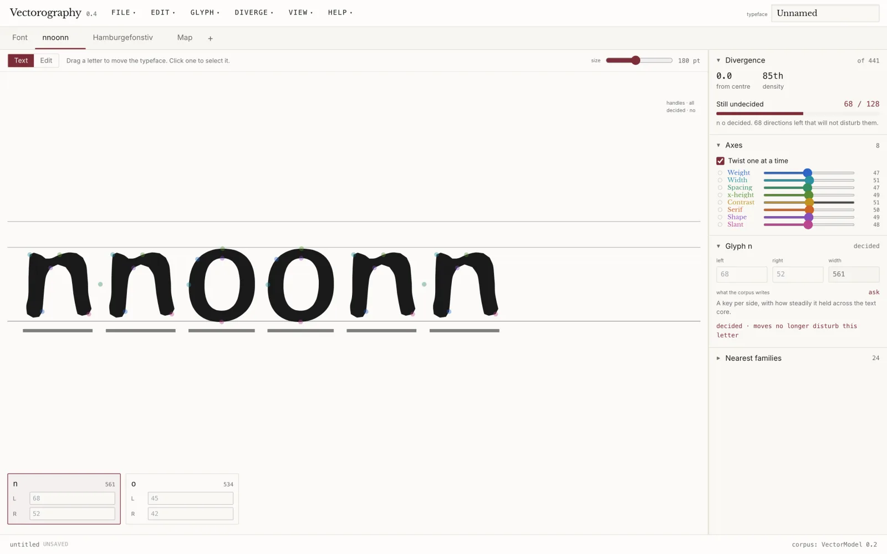
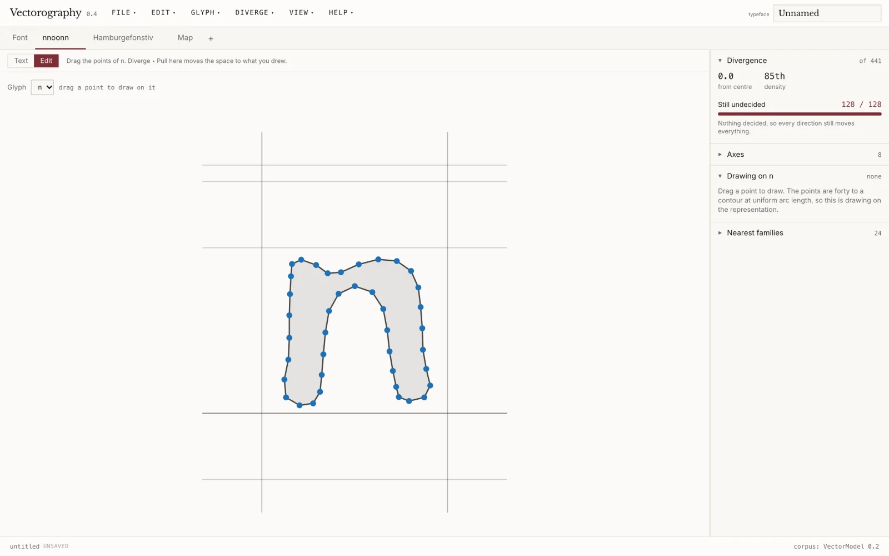
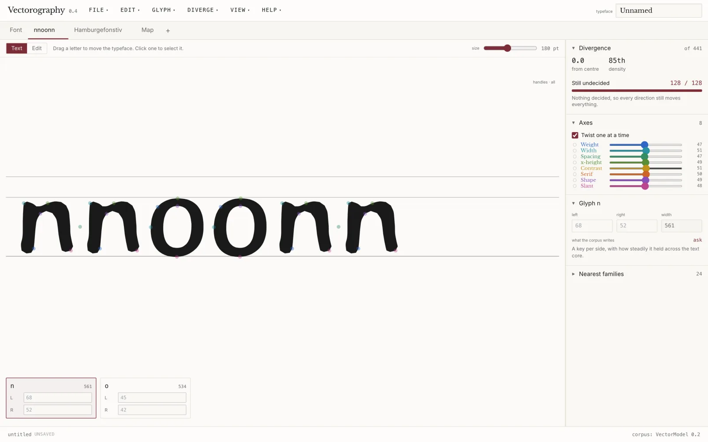
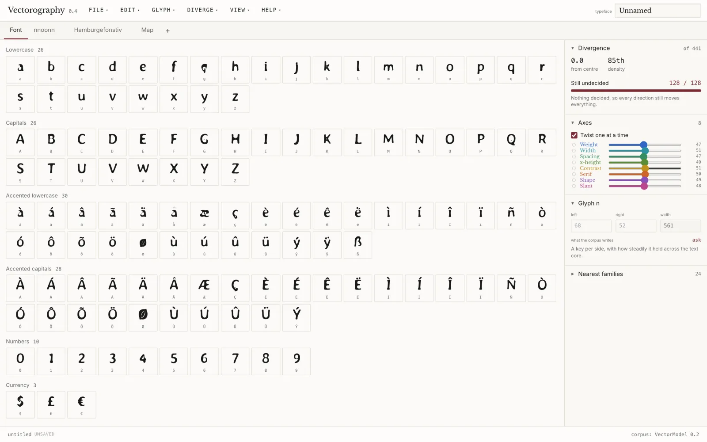
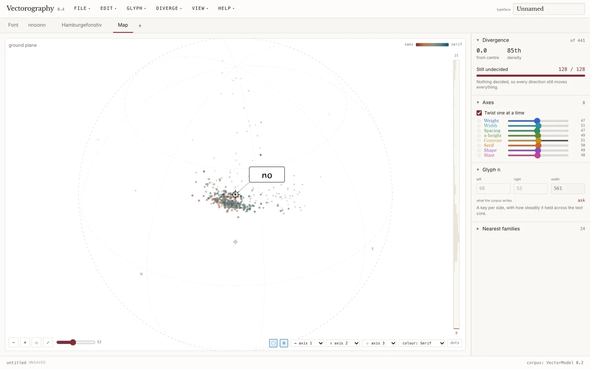
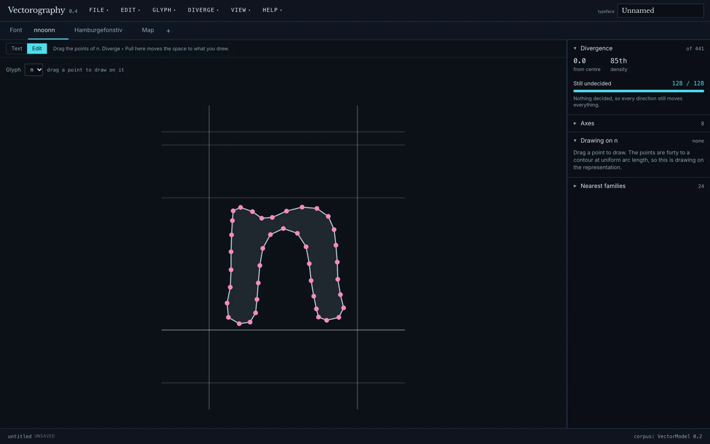
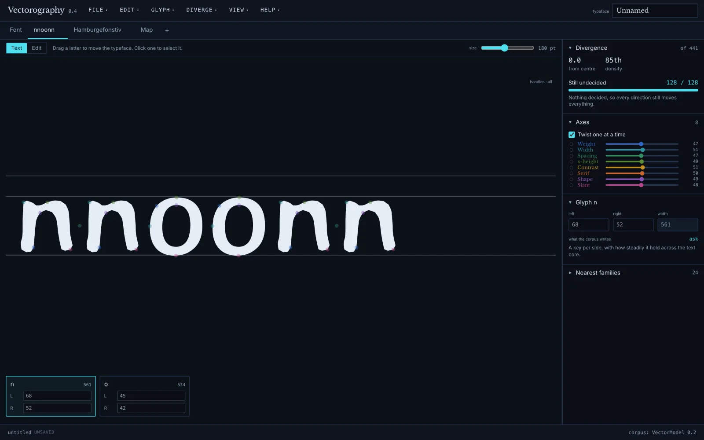
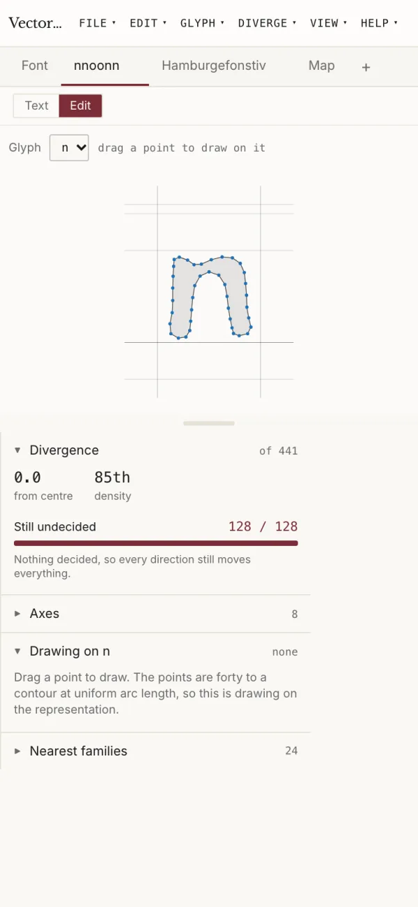

Vector Lab · design instrument · v0.4
Vectorography is a typographic instrument in which a typeface is a point in a 128-dimensional space fitted on 441 open-licence families, and designing is moving through that space rather than drawing outlines. Outlines exist only at the end, when a location is compiled out to OpenType.
Every location in the space decodes to a complete 164-glyph typeface, so you judge a face by looking at it rather than by reading parameters. There is no prompt and no generate button: every control is a movement, and the letterforms are already everywhere in the space.
The decode is an exact linear map, x = mean + (z ⊙ scale) @ components, which is what makes the measurements on this page possible. The model is a whitened principal subspace of 164 glyphs × 5 contours × 40 points plus advances, 65,764 dimensions reduced to 128.
Decide a letter and the space holds it while everything else moves. Because one glyph occupies 401 coordinates and the space has 128 dimensions, holding it exactly is impossible, so it is held by projection: the move is confined to the directions the decided letters barely feel. The count of those directions is a reading of how much of the typeface is still open.
n83n and o68Measured on VectorModel 0.2, counting the directions that move the decided letters by under one per cent of the worst case.
Nothing to configure and no account. The fitted space ships inside the repository, so a clone can travel straight away without downloading the 441-family corpus.
3.12 or newer fastapi, uvicorn, fonttools, numpy, pillow22 or newer for the Vite frontendrun.sh is bash; on Windows use WSL or Dockergit clone https://github.com/vector-lab-tools/vectorography
cd vectorography
./run.shOne command. It creates the Python environment on first run, installs the frontend, then starts the space on :8765 and the app on :5173. Open http://localhost:5173.
docker build -t vectorography .
docker run -p 7860:7860 vectorographyTwo variables exist, both optional. There are no API keys, no credentials and no third-party services.
APP_VERSION fallback when the VERSION file is absent, as in some container buildsVG_CORPUS_SIZE how many families to fetch if you rebuild the space from scratch, default 500To check a running instance:
curl -s http://127.0.0.1:8765/api/health
{"ok":true,"model":"VectorModel 0.2","families":441,"dims":128,"version":"0.4"}Open on the glyph, draw or accept n, then Glyph ▸ Decide. Do the same for o. The Divergence panel reads 128 at the start, 83 after n, 68 after o. Those two letters set the stem and the bowl, and the space then proposes the other 162.

n and o decided. The inspector reads 68 / 128, and the rules under the letters mark what has been decided. Version 0.4.Either sidebearing takes a number in units or a key, after Glyphs: =n is n's own bearing, =|n is n's mirrored, =n+8 is that plus eight units. A key stays true when the letter it points at moves.
The suggestions come from the sixty families nearest the centroid rather than all 441, because across the whole corpus the agreement is too loose to use. Measured: m~n agrees to ±17.8 units across the corpus and ±9.7 in the text core; o~c holds to ±4.1.
From File ▸ Export, or over the API:
curl -s -X POST http://127.0.0.1:8765/api/export/font \
-H 'Content-Type: application/json' \
-d '{"z":[0,0,0,"…128 numbers…"],"family":"Demo","format":"otf",
"licence":"none","author":"","straight":0,
"settled":[],"settle_tol":0.01,"spacing":{},"outlines":{}}' \
-o demo.otfAt the centroid that returns a 75,160-byte OTF: 166 glyphs at 2048 units per em, CFF outlines, with cmap, name, OS/2, hmtx and post tables written. The journey itself can also compile as a variable font, with the stops as weights and the route between them as the axis.
Exports are for study and specimen. There is no hinting, no kerning and no overlap removal, and the glyph set is fixed with stable contour counts.
All taken from version 0.4 against the running app.







/api/corpus in about 0.14 s.index.html. Fixed in 0.4 by serving the page with Cache-Control: no-cache and the hashed assets as immutable. If you are running an older build, hard-reload once../run.sh reports that port 5173 or 8765 is in uselsof -i :8765, or start the two halves by hand on other ports; the frontend proxies /api to 8765.backend/data/vectormodel-0.2.npz is missing or is a 130-byte Git LFS pointer rather than the 30 MB file. .gitattributes declares *.npz as LFS, but the file is stored as an ordinary blob; if your clone smudged it, fetch it with git lfs pull or re-download the file from the repository.a, e and g, average badly because a one-counter drawing is padded against a two-counter one. Glyph ▸ Straighten pulls near-straight runs onto their straights, which helps stems but not counters. This is a limit of the representation rather than a setting.Diverge ▸ Pull here, which moves the typeface as near the drawing as the space can reach and reports how far that was, or Glyph ▸ Reset to drop the drawing.Everything inside the corpus hull is an interpolation of what exists, and past it the outlines degrade. What it offers is a map of what exists, a way to propagate one decision across a character set, and a measure of what you have made.
Forty to a contour at uniform arc length, so drawing on them is drawing on the representation. A curve fit is wanted before anyone edits these outlines by hand elsewhere.
A fixed 164-glyph set with stable contour counts. No hinting, no kerning, no overlap removal.
Bring a typeface in and the space explains 48 to 69 per cent of its departure from the corpus average, leaving 0.017 to 0.040 em it cannot draw. It finds the right neighbourhood and then cannot say everything it found.